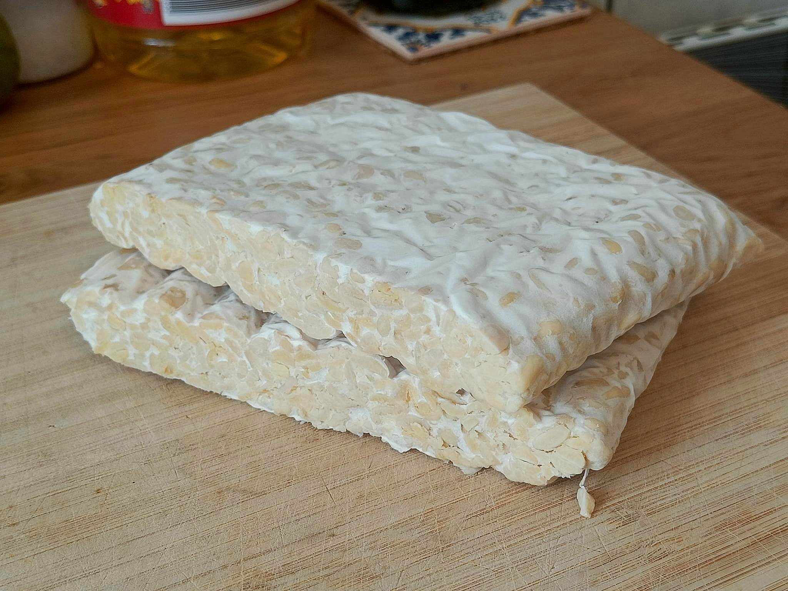
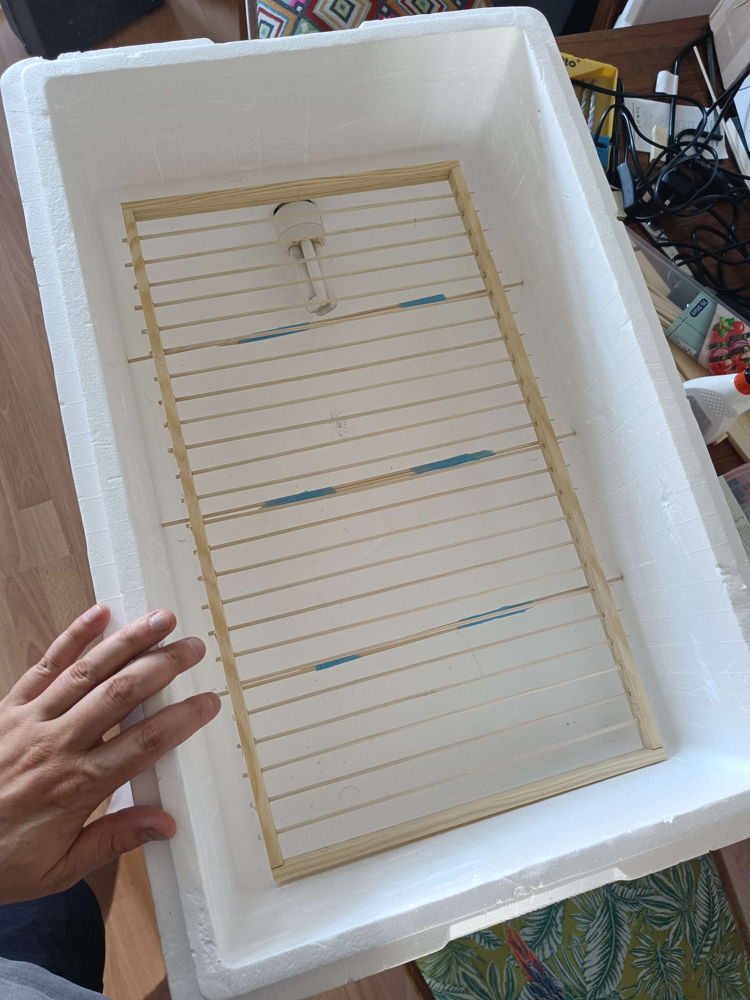
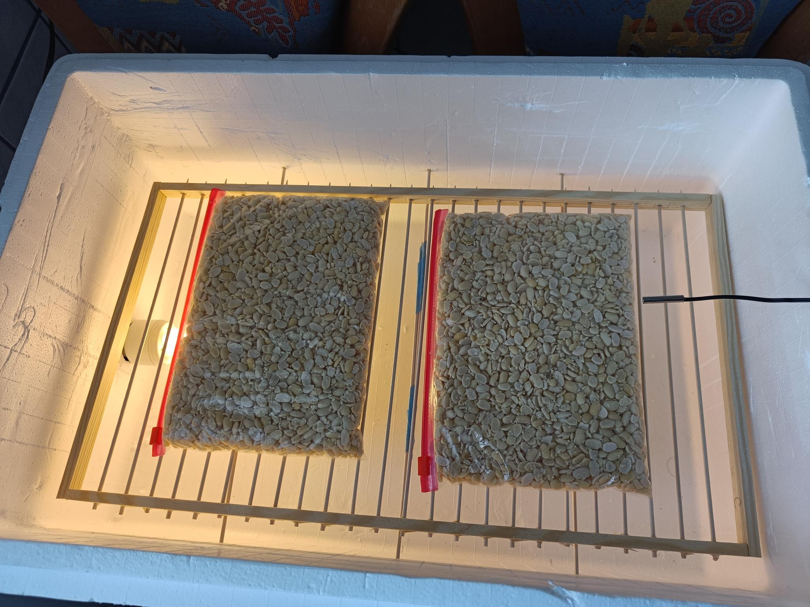
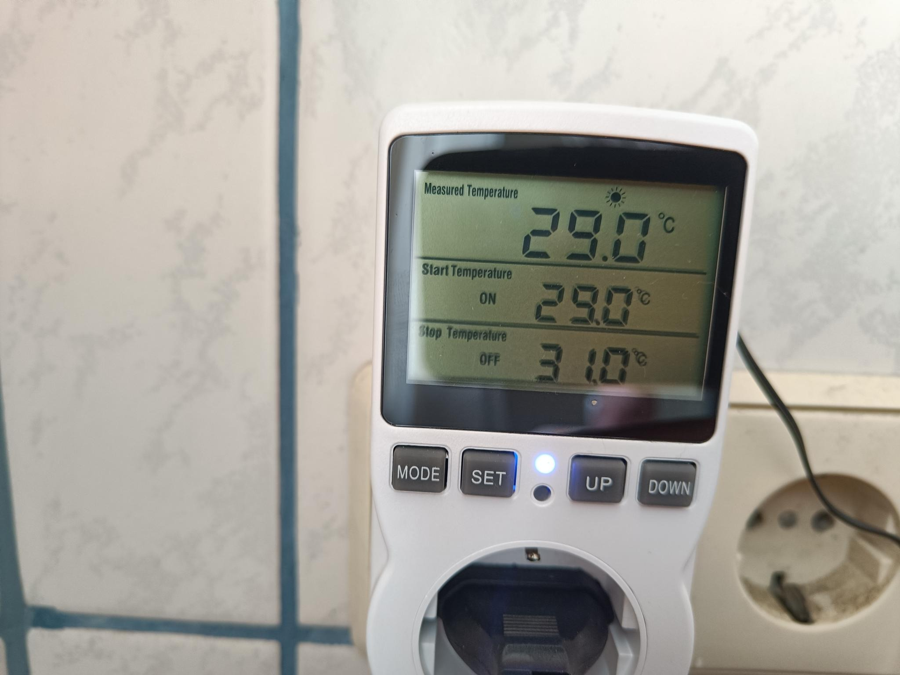
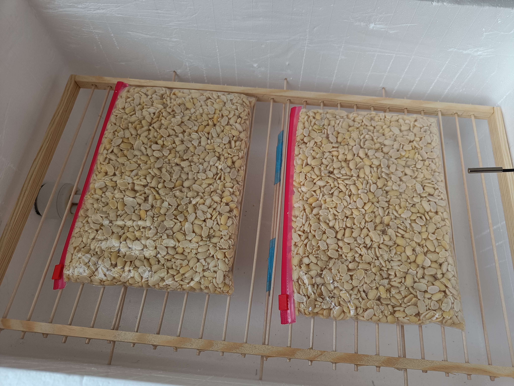
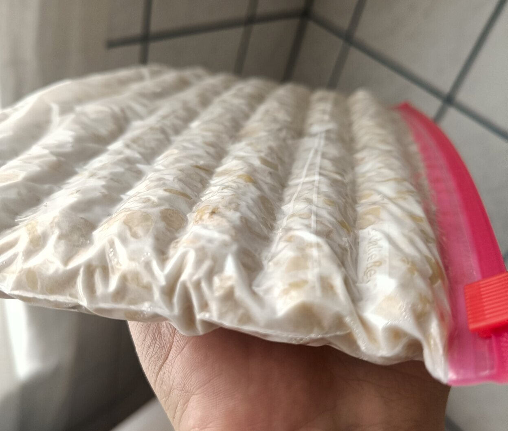
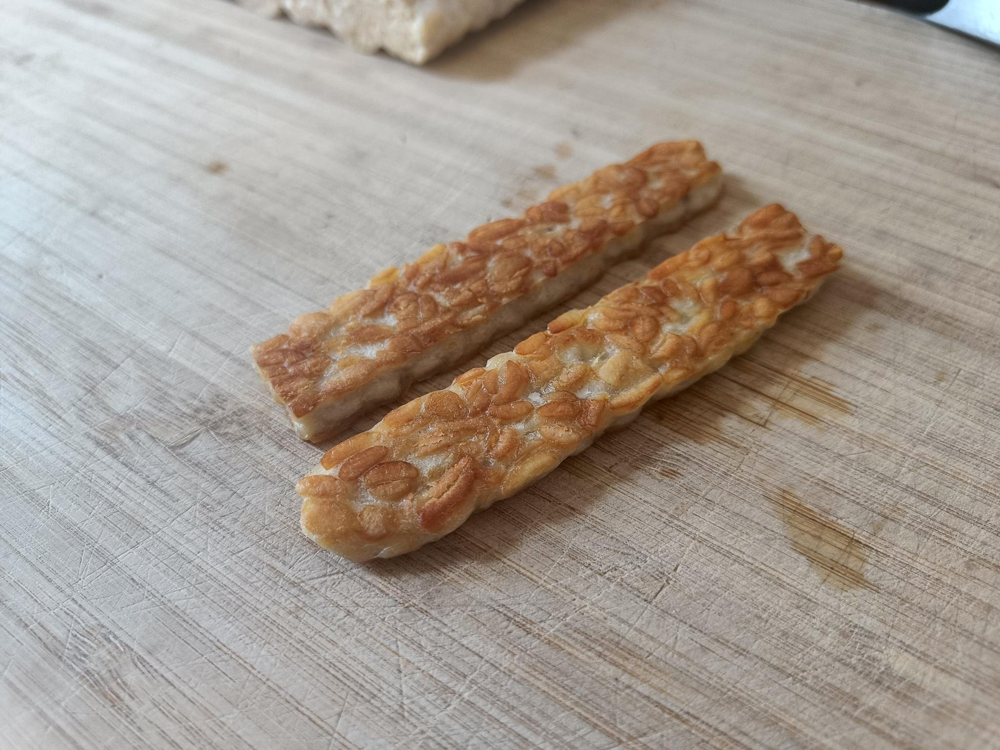

I made tempeh this week for the first time, it came out perfectly. I have some big hopes for the future being able to produce it at a larger scale as it's still a little harder to come by here than in the US.
First things first, huge thanks to @peoplelovedogs for her recommendations and guidance, as well as a detailed price breakdown. And shoutout to the entire 438punk.house crew!!!
Basics
Tempeh is made from soybeans fermented with a fungus, producing a firm funky 'cake'. The white part is the mycelium of the fungus, rather than the mushroom (fruit) that we normally associate with eating fungus. Tempeh as a food originated in indonesia where it is a common ingredient in many meals. It has a musty nutty flavor, sometimes reported as being a little bitter depending on the production process and age.
The process for making tempeh is simply to cook soy beans and innoculate with tempeh starter (mix in some of the dried fungus). Then the mixture is kept at a temperature and humidity that makes the fungus happy to grow, around 31c degrees (88f). The tempeh takes around two days to ferment and become ready for eating! The only "hard" part is finding a good regulated heat source to keep your batch in the right temperature range.
My process
I researched heavily and watched nearly every youtube video in english that I could find on the subject. The undisputed king of youtube for tempeh is Francius Suwono https://www.youtube.com/@francius1003. He covers everything from alternate beans to recipies and multiple formats of incubators. He even has wiring and programming guides for custom thermostat hardware. I find his videos a little slow but the information is all there.
I decided I wanted a proper large scale vessel to do my tempeh in, like Francuis' styrofoam cooler. This way you could make multiple wooden racks that stack on top of each other and produce a large amount of tempeh at the same time. This is the limiting factor in production, assuming you have a way to cook multiple kg of dried beans. I also decided I wanted a proper thermostat with very accurate controls, despite the potential cost. I did also look around for cheaper used thermostats in my area, but without much luck.
The incubator
I found two of these large styrofoam containers for sale on a local swap site, 5 euro total. Their inside measure is around 52cm by 32cm. The incubator is 'powered' by a regular household lightbulb plugged into the thermostat socket.
- 
- 
I build wooden rack following the guide from Francuis, although I neglected to find the wood that was tall enough for the frames, so these racks will not easily stack on each other.
Thermostat & Temperature
I bought a commercial thermostat off of Amazon.de (ugh) for around 25 euros. This worked very well and seemed to have an accurate measure of the temperature. The downside to this specific design is that the thermostat plugs directly into the socket, like a nightlight. So you'll need an extension cord to work with it anywhere away from a socket.
Note: This thermostat, sold by "Seamuing" is one of those consumer devices that is repackaged and rehoused with many different names. I found about 10 different 'brands' on amazon selling these with alternate colors, temperature probes and screens.
For temperature I set ended up leaving it at 29c - 31.5c or so. Because of natural hysteresis in the slew rate of the air the measured temperature was rising as high as 32.5 after the bulb shut off at 31. This seemed fine based on the growth rate graphs i've seen. I snaked the temperature prob under the crack of the lid on the opposite side of the bulb to make sure i was measuring the ambient temperature and not the bulb directly.
Beans & Starter
I bought dehulled soy beans and the Tempeh Spore stater from fermentationculture.eu. 10g of spores cost 6 euro and 1kg of dried soy beans cost 6.50 euro. I chose to buy these beans instead of ones from a local shop because i wanted my first attempt to be as easy as possible. It seems like pre-cooking the soy beans and manually dehulling them is not much work though.
The first batch
I cooked up half (500g) of the dried soy beans. I left the pot unattended and it flowed over, but all was good and let me skip a lot of the work of removing the foam that builds up on the surface. After the beans were cooked and drained, i added 2 teaspoons of white wine vinegar, though this seems to be an optional step. some people complain that the vinegar adds a bitter taste to the final product but my hunch is that this is the tempeh it's self, as this amount of vinegar in nearly a kilogram of cooked beans should be negligible.
After the beans cooled and dried I added the tempeh starter, around 2g as I estimated I had nearly 1kg of cooked beans. I definitely fudged the numbers here and went extra rather than less. With too little starter your tempeh will have 'gaps' where the beans are not totally surrounded with mycelium. With too much the tempeh will turn out fine but you will run out of starter quicker. As I plan to start making my own starter (just let some tempeh fungus grow on rice for a long time until it goes to spore) this isn't a fear for me.
Note: The amount of tempeh starter to use in ratio to your beans is highly dependent on the strength of the starter. All starters are tempeh fungus spores mixed with some food base, usually rice. I followed the directions on my package that suggest 2g to every kilogram of wet material.
Then it was into the 1 liter ziplock bags with the beans, flattened out and a ton of small holes punched with some toothpicks. Roughly a grid of 8x5 on each side of each bag. I closed the incubator up and started the thermostat!
After about 18 hours I noticed the internal temperature of the incubator was staying above my cutoff point, with the bags feeling very warm to the touch. The probe said it was around 34c. This will certainly change in winter time when the house is not so ambiently warm.
After 35 hours I pulled the tempeh out of the incubator, checked that the cake had fully formed and happily threw it into the fridge, wrapped in a second layer of tinfoil.
Final product
After 10 hours in the fridge I sliced up some tempeh and aggressively fried it. It was DELICIOUS! This tempeh was definitely softer and more actively fungus smelling than the ones I buy in the store. After cooking flavor was not so different, though the texture was nicer.
Cost breakdown
My first batch was 500g of soybeans, cooked and fermented to around 1 kilogram of finished tempeh. The (expensive organic) soybeans cost 3.50, the starter was around 1.50.
Not counting materials or time, this puts the cost per 100g of tempeh at around 40 cents!!!
To compare to local prices, the company Tempeh Manufaktur charges 3.89eu per 200g block, which is 1.95 eu per 100g. So mine is around one fourth of the price!
The costs for setting up the incubator, including the materials and tools for make the shelf and buying the lightbulb socket was around 57 eu. Not bad as I can much more easily make new shelves without paying anything extra. And if I expand the capacity by stacking the cooler boxes into one mega-incubator I could easily incubate 4x the amount of tempeh at once, ending up with 4 kilograms product!
Next steps and changes
Next batch I plan to leave the tempeh longer, closer to the full 48 hours, to see if i get a better firmer product. I wanted to avoid any unsightly (but safe) black spores from developing as the fungus matured, so I greedily removed it as soon as it seemed reasonably done.
I would like to find a local provider for the soybeans, which will mean doing my own dehulling. This will reduce the unit cost further but require a little more patience. Again, I skipped this step because I wanted the best possible first result.
I'm also a little unsatisfied with the height of the final blocks, they're slightly flatter than the commercial stuff I'm used to. I'll probably pack the same amount of material into each back, but then push it more against one end and a few centimeters of extra bag under. I have also seen some people use regular plastic food bags (sandwich bags) and seal the ends closed with a candle. Something to try?
End!
Thanks for reading, please contact me with any questions though I am just starting out myself :D